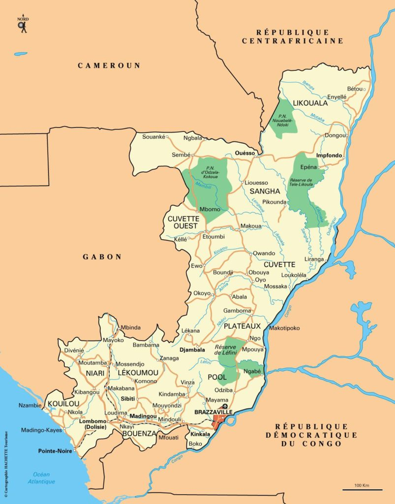

Histoire de la République du Congo
Périodes historiques
L’histoire du Congo a connu plusieurs étapes, notamment l’exploration portugaise, la colonisation française, le monopartisme, le multipartisme et l’économie de marché dans les années 1990.
Les Bambuti étaient les premiers habitants du Congo. Ils avaient établi des liens avec des tributs pygmées. La principale tribu bantoue vivant dans la région a été celle des Kongo, établie sur tout ou partie de l’actuelle Angola, la République du Congo, la République Démocratique du Congo et le Gabon.Au Portugal, la volonté d’accéder aux marchés orientaux exprimée par le roi Jean a favorisé les expéditions portugaises au Congo au début du 14ème siècle. Entre 1482 et 1483, le capitaine Diogo Cao, naviguant vers le sud a découvert le fleuve Congo, devenant ainsi le premier Européen à pénétrer le Royaume du Kongo. Timides aux débuts, les relations entre le royaume du Kongo et le Portugal se sont rapidement développées. Le christianisme s’est aussitôt répandu auprès de la noblesse locale. Vers les années 1540, les missionnaires portugais baptisèrent le Roi Mbemba a Nzinga connu sous le nom d’Alfonso 1er devenant ainsi le 1er roi d’Afrique au sud du Sahara converti au christianisme. L’Expansion du christianisme dans ce royaume a favorisé le développement des relations diplomatiques entre les deux (2) pays.
Les explorateurs portugais ont exercé une grande influence sur les rois du Congo dans le cadre de la traite négrière. Ils se sont appuyés sur eux pour s’approvisionner en esclaves devant être acheminés vers les Amériques. Ce commerce créa une véritable hémorragie humaine qui affaiblit considérablement le royaume. Les portugais se sont emparés de près de 350.000 esclaves dans ce royaume.
L’un des exemples de cette résistance est certainement la bataille de Mbwila, qui est le résultat d'un conflit de droits fonciers entre les Portugais dirigés par le Gouverneur André Vidal de Negreiros et le Roi du Congo António I. Il faut souligner que les révoltes éclatèrent souvent entre les portugais et les autochtones, en raison du refus de ces derniers de céder leurs droits fonciers. Au cours de la bataille de Mbwila du 25 Octobre 1665, l'armée royaume fit face aux Portugais. La bataille se solda par une victoire portugaise. La révolte de Kimpa Vita (prophète congolais, leader de son propre mouvement chrétien) les années suivantes fut une autre tentative du Royaume de reconquérir son indépendance perdue.
Après l’accession à l’indépendance du Royaume de Loango, plusieurs autres petits royaumes virent le jour. Le Royaume-Teke devient la plus importante et la plus grande entité politique. Il englobait tout ou partie de l'actuelle République du Congo, la République démocratique du Congo, le Gabon et la République centrafricaine. La position unilatérale du Portugal en Europe subit un coup dur en 1580 lorsque les Royaumes d'Espagne et du Portugal s’unirent sous le règne du roi Philippe. L'alliance entraîna une réduction de l'omniprésence du Portugal au Kongo. Le Royaume du Congo fut alors réduit à une petite enclave dans le nord de l'Angola avec le roi Pedro V, finalement devenu vassal des Portugais. Les Portugais abolirent le royaume après la révolte des Kongolais en 1914.
Durant la période précédant la Conférence de Berlin de 1884, on assista à une ruée des grandes puissances européennes sur le continent africain, dans le but d’élargir leur empire et de s’approvisionner en matières premières. La montée du capitalisme en Europe occidentale et l’'industrialisation qui en résultait eurent pour conséquence l’accroissement de la demande en matières premières africaines telles que le caoutchouc, l'huile de palme et le coton. Pour atteindre cet objectif, il fallait à tout prix s’offrir des colonies en Afrique. Cet intérêt nouveau fut baptisé " ruée vers l'Afrique " et le fleuve Congo devint de ce fait une cible stratégique pour cette nouvelle conquête. L'explorateur français, Pierre Savorgnan de Brazza, qui donna son nom à Brazzaville, notre ville Capitale, est né à Rome (Italie) en 1852.
Officier de marine Français, il refusa de travailler pour la Société Internationale Africaine et aida plutôt les Français dans leur conquête de la partie nord du fleuve Congo. Voyageant de la côte Atlantique dans ce qui est aujourd'hui le Gabon, via les fleuves Ogooué et Lefini, il arriva en 1880, dans le Royaume Téké. En septembre 1880, il signa un traité avec le Roi Makoko établissant la domination française sur la région.
Le 30 Avril 1891, les Français baptisèrent leur territoire congolais «Colonie du Congo français." Le 15 Janvier 1910, le colonisateur français donna à ses colonies d’Afrique Centrale le nom d’Afrique Equatoriale Française (AEF) ces colonies comprenaient la République centrafricaine, le Cameroun, le Tchad et la République du Congo. Pendant l'occupation de la France par les forces nazies durant la Seconde Guerre mondiale, le Congo devint la capitale de la France libre, de 1940 à 1943. En 1944, la France accueillit la Conférence de Brazzaville au cours de laquelle de nombreuses réformes politiques furent amorcées. Brazzaville accéda à l’autonomie le 28 novembre 1958et devint officiellement la République du Congo.
L’une des figures les plus emblématiques de la lutte pour l’indépendance est certainement André Grénard Matsoua Considéré comme un nationaliste influent, il fut à la tête du mouvement de désobéissance civile en vue de mettre fin à la colonisation. Il était un opposant actif au Code de l'indigénat. D'autres leaders nationalistes tels que l’ancien prêtre catholique Fulbert Youlou et Jacques Opangualt ont aussi largement contribué à l’accession du pays à l’indépendance le 15 Août 1960.
En sa qualité d’ancienne capitale de l'Afrique équatoriale française, Brazzaville est demeurée centre important du syndicalisme, qui a également contribué à l’émancipation du continent. La radicalisation des anciennes colonies européennes en Afrique a favorisé l’émergence des idéaux socialistes et communistes, qui ont alimenté la lutte de libération nationale. Après plusieurs années de turbulences et l'effondrement de l'Union soviétique dans les années 1990, la République du Congo est passée d’un système de parti unique et d’économie planifiée, à celui d’une démocratie pluraliste pratiquant l’économie de marché.
Malheureusement, en 1997, la marche du Congo vers le développement économique et la démocratie a été freinée par la guerre civile. Après la signature d'un cessez-le feu en Octobre 1997 suivi d’un accord de paix en Décembre 1999 le président de la république son Excellence Denis Sassou N’guesso, a réussi à conduire le pays vers un nouveau chapitre de son histoire. Des élections présidentielles démocratiques se sont tenues en 2002 et 2009, qu’il a largement remportées.
Cartographie et Géographie

Carte de la République du Congo
La République de Congo est située en Afrique Centrale, le long de l’équateur.
Elle est limitée au nord par le Cameroun et la République Centrafricaine, à l’ouest par le Gabon, à l’est par la République Démocratique du Congo et l’Angola au sud-ouest.
Le Congo a une superficie de 342 000 km2, soit trois fois l’Etat de Pennsylvanie.
Sa capitale, Brazzaville, est située sur les rives du fleuve Congo face à Kinshasa la capitale de la République Démocratique de Congo, faisant des deux villes, les deux plus proches capitales du monde, après Rome et le Vatican.
A cheval sur l’équateur, la République du Congo a une température quotidienne moyenne de 24°C (75°F), et un climat humide.
La nuit, il y fait entre 16°C (61°F) et 21°C (70°F). La saison sèche s’étend de juin à septembre. La saison des pluies commence en octobre et se termine en mai, avec une courte saison sèche en janvier-février.
Les vastes étendues de forêts de la République du Congo fournissent un habitat privilégié aux gorilles et à d’autres espèces. Selon le rapport 2006/2007 de la wildlife Conservation Society, la population des gorilles en République du Congo compte 125.000 gorilles de plaines occidentales.
Le relief du Congo est une variante de plaines côtières, de régions montagneuses, de plateaux et de vallées fertiles. 70% de la superficie du pays est recouverte par la forêt tropicale.
Le point culminant du relief est le Mont Nabemba, situé dans le département de la Sangha. Il a une altitude de 1.020m.
La république du Congo est résolument engagée dans la protection de l’environnement.
A ce titre, elle a adopté une série de mesures au plan national, et signé des accords internationaux sur la biodiversité, les changements climatiques, la désertification, la protection des espèces en voie de disparition, la couche d’ozone, et la préservation de la faune et de flore.
Les 12 départements du Congo
| Département | Chef-lieu |
|---|---|
| Bouenza | Madingou |
| Brazzaville | Brazzaville |
| Cuvette | Owando |
| Cuvette-Ouest | Ewo |
| Kouilou | Loango |
| Lékoumou | Sibiti |
| Likouala | Impfondo |
| Niari | Loubomo |
| Plateaux | Djambala |
| Pointe-Noire | Pointe-Noire |
| Pool | Kinkala |
| Sangha | Ouésso |
Les départements sont subdivisés en 86 districts et 7 communes.
Climat de la République du Congo
- Grande saison des pluies : octobre à décembre ; températures de 25° à 35° avec pluies fréquentes.
- Petite saison sèche : janvier et février ; absence de pluies, températures élevées (jusqu’à 35°).
- Petite saison des pluies : mars et avril ; températures élevées et pluies fréquentes (jusqu’à 35°).
- Grande saison sèche : du 15 mai au 15 septembre ; absence de pluies, températures plus basses (18° à 25°).
- Nord : influence équatoriale, pluviosité plus forte et régulière, températures supérieures (+5° à +10°) au Sud.
- Centre : climat subéquatorial avec saison sèche très marquée.
- Températures moyennes annuelles : 23° à 26°, homogènes.
- Amplitude thermique annuelle faible (1,5° à 4,7°), plus marquée dans le Sud que dans le Nord.
Relief de la République du Congo
- Zone littorale plate : 0 à 200 m d’altitude, entre côte atlantique et pentes du Mayombe.
- Zone montagneuse : massifs du Mayombe et du Chaillu (400 à 900 m), vallée du Niari (200 à 400 m).
- Zone centrale : plateaux Batéké et plateaux des cataractes (400 à 800 m).
- Massifs montagneux du Nord-Ouest : jusqu’à 1 000 m.
- La cuvette au Nord-Est : 200 à 400 m.
- Deux formations végétales : forêts (65%) et savanes (35%).
Cours d’eau de la République du Congo
- Climat équatorial et tropical → réseau hydrographique dense (225 000 km²).
- Principales rivières : Sangha, Léfini, Bouenza, Louéssé, Oubangui, Kouilou, Niari, etc.
- Bassin du fleuve Congo et affluents : Oubangui, Sangha, Likouala-aux-herbes, Alima, Léfini, Djoué... (débit moyen : 68 000 m³/s, 2e fleuve le plus puissant au monde après l’Amazone).
- Bassin du fleuve Kouilou-Niari et affluents : Bouenza, Loémé, Nyanga, Loutété, Loudima, Louéssé (débit moyen : 700 m³/s).
- Lacs et lagunes : lac Télé (Likouala), complexe Nanga-Nginga, Kobambi, Cayo-Loufoualeba, lagune de Conkouati (Kouilou).
- Façade atlantique : 169 km, côte rectiligne interrompue par baies et pointes (Pointe Kounda, Pointe Indienne, Pointe-Noire).
Forêts de la République du Congo
- Massif du Mayombe : département du Kouilou (1 503 172 ha).
- Massif du Chaillu : départements du Niari et de la Lékoumou (4 386 633 ha).
- Massif du Nord-Congo : départements de la Likouala, de la Sangha et des deux Cuvettes (15 991 604 ha, dont 7 millions ha de forêts inondées).
- Autres forêts : Sud-Est et Centre.
- Superficie forestière totale : 22 471 271 ha.
- Types de forêts :
- Terre ferme
- Inondées
- Secondaires claires
- Plantations forestières
- Mangroves (en bordure des eaux marines)